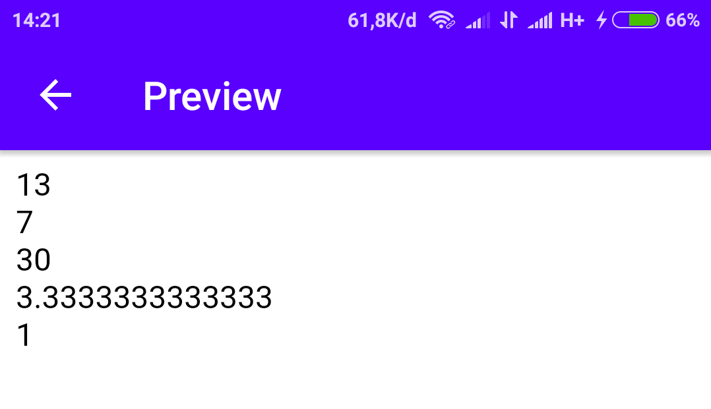

Dalam PHP ada beberapa operator:
- Arithmetic operator
- Comparison operator
- Increment/Decrement operator
- Logical operator
- String operator
Arithmetic Operator
Untuk melakukan operasi aritmatika penjumlahan, pengurangan, perkalian, pembagian, modulus/sisa bagi.
Contoh:
<?php
$x = 10;
$y = 3;
echo ($x + $y)."<br>";
echo ($x - $y)."<br>";
echo ($x * $y)."<br>";
echo ($x / $y)."<br>";
echo ($x % $y)."<br>";
?>
Hasilnya:

Comparison Operator
Untuk melakukan operasi perbandingan.
Contoh:
<?php
$x = 10;
$y = 3;
echo ($x == $y)."<br>";
echo ($x === $y)."<br>";
echo ($x != $y)."<br>";
echo ($x <> $y)."<br>";
echo ($x !== $y)."<br>";
echo ($x > $y)."<br>";
echo ($x < $y)."<br>";
echo ($x >= $y)."<br>";
echo ($x <= $y)."<br>";
?>
Keterangan:
0 / kosong = false
1 = true
Hasilnya:
Increment/Decrement Operator
Untuk melakukan operasi peningkatan atau penurunan bilangan.
Contoh:
<?php
$x = 10;
echo (++$x)."<br>";
echo ($x++)."<br>";
echo ($x)."<br>";
echo (--$x)."<br>";
echo ($x--)."<br>";
echo ($x)."<br>";
?>
Hasilnya:
Logical Operator
Untuk melakukan operasi logika.
Contoh:
<?php
$x = true;
$y = true;
$z = false;
echo ($x and $y)."<br>";
echo ($x or $y)."<br>";
echo ($x xor $y)."<br>";
echo ($x && $z)."<br>";
echo ($x || $z)."<br>";
echo (!$y)."<br>";
?>
Keterangan:
0 / kosong = false
1 = true
Hasilnya:
String Operator
Untuk menambah string dengan " . " atau " .= "
Contoh:
<?php
$namadepan = "Belajar";
$namabelakang = "PHP";
echo $namadepan." ".$namabelakang."<br>";
$namadepan .= $namabelakang;
echo $namadepan." ".$namabelakang;
?>
Hasilnya: